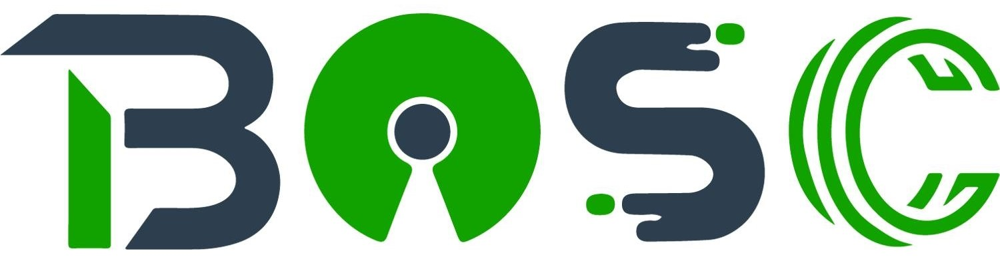

Birendra Open Source Club (BOSC) is a tech community that primarily focuses on awareness and promote free and open source software as well as awarding people for the contribution on open source projects. It is an open and independent club of IT enthusiast students of Birendra Multiple Campus. It organizes and hold various programs to guide all the student in IT field. It also organize various programs, competitons and camps. It was established on 2021.